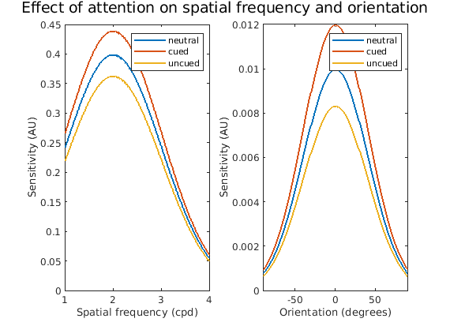
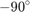
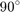
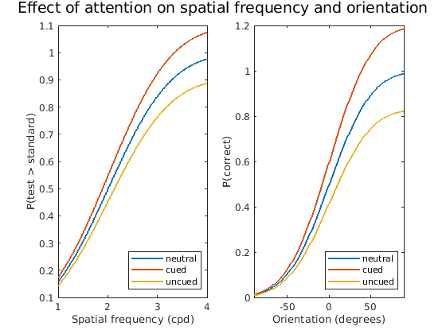
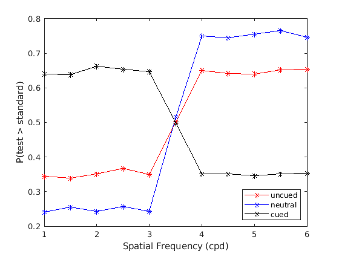

Contents
clear; close all; clc;
1)
The role of attention is to increase the discriminability of the stimulus and suppress the unwanted noise. Therefore, in terms of spatial frequency, I would expect a broadening of spatial frequency and orientation bandwidths because of attention. This would ensure that the sensitivity of all the spatial frequencies and all orientation bandwidths is increased due to attention. As a result, the performance of the subject would improve for all spatial frequencies and orientation bandwidths. However, this would also imply an increased sensitivity to noise at all spatial frequencies and orientation bandwidths.
According to this hypothesis, the effect of attention can be modeled as an increase in the Gaussian response curve over all spatial frequencies and orientation bandwidths. This can be modeled using Naka-Rushton functions and their modifications as in (Wang et al., 2017; Jigo and Carrasco, 2020). However, for the sake of this assigment, I have kept the approximation to a Gaussian model that serves the purpose. In fact the cdf of a Gaussian model is a psychometric curve that can model both response gain and/or frequency and/or orientation gains.
In terms of a psychological experiment, attention can be modeled as a cue. And absense or no attention can be modeled by a neutral cue. At the same time, the location that is uncued will serve as unattended stimulus. Modeling this using a Gaussian for spatial frequency and orientation of the stimulus, would provide following curves in the case that the hypothesis does hold true.
mu_sf = 2; sigma_sf = 1; sf = 1:0.01:4; sens_sf_neutral = normpdf(sf, mu_sf, sigma_sf); sens_sf_cued = normpdf(sf, mu_sf, sigma_sf) * 1.1; sens_sf_uncued = normpdf(sf, mu_sf, sigma_sf) / 1.1; ori = -90 : 1: 90; mu_ori = 0; sigma_ori = 40; sens_ori_neutral = normpdf(ori, mu_ori, sigma_ori); sens_ori_cued = normpdf(ori, mu_ori, sigma_ori) * 1.2; sens_ori_uncued = normpdf(ori, mu_ori, sigma_ori) / 1.2; fig1 = figure(); suptitle(sprintf('Effect of attention on spatial frequency and orientation\n')) subplot(1, 2, 1) plot(sf, sens_sf_neutral, 'DisplayName', 'neutral', 'Linewidth', 1.5) hold on; plot(sf, sens_sf_cued, 'DisplayName', 'cued', 'Linewidth', 1.5) plot(sf, sens_sf_uncued, 'DisplayName', 'uncued', 'Linewidth', 1.5) xlabel('Spatial frequency (cpd)') ylabel('Sensitivity (AU)') legend(); subplot(1, 2, 2) plot(ori, sens_ori_neutral, 'DisplayName', 'neutral', 'Linewidth', 1.5) hold on; plot(ori, sens_ori_cued, 'DisplayName', 'cued', 'Linewidth', 1.5) plot(ori, sens_ori_uncued, 'DisplayName', 'uncued', 'Linewidth', 1.5) xlabel('Orientation (degrees)') ylabel('Sensitivity (AU)') xlim([-90, 90]) legend();
However, the role of attention would also depend on whether endogenous or exogenous attention are deployed, the demands of the task, and the nature of the task (Carrasco, Ling and Read, 2004; Abrams, Barbot and Carrasco, 2010; Carrasco and Yeshurun, 2009; Barbot and Carrasco, 2017; Jigo and Carrasco, 2020; Dugue et al., 2020). In these and other instances, there are several similarities in behavioral performance for endogenous covert and exogenous covert attention despite quite a few dissimilarities based on task demand. Here, I am assuming that the performance for both endogenous and exogenous would be same or close to similar. An experiment can be run to verify if there are differences in the effect of endogenous vs exogenous attention on spatial frequency and orientation bandwidths.
2)
Adapting the task designs from Carrasco, Ling and Read, 2004 and Abrams, Barbot and Carrasco, 2010, I have designed a behavioral experiment that would help determine the sensitivity of the subject to different spatial frequencies and orientations based on whether the stimulus is attended (cued), not attended (neutral) or unattended (uncued). Additionaly, the experimental setup can also help determine the differences (if any) between the performance in an exogenous vs endogenous attention task.
Note: Figures for task design are present at the end of the document.
Exogenous attention task
(adapted from Carrasco, Ling and Read, 2004)
The exogenous attention task will include three displays. A blank screen with fixation dot will serve as a fixation screen, interval screen and response screen. After the fixation screen, a screen with cue will be presented. The cue appears as a dot on the side that is being cued. For neutral cue, the fixation dot will become thicker. After the interval following cue, two gabors will be presented. One Gabor (standard) would be a standard Gabor of say 3.5 cpd while the other would be a test Gabor (test) with a range of spatial frequencies that can be optimized through piloting. During the response period, the subjects have to report the orientation of the higher spatial frequency stimulus. The subjects have four keys to choose from let's say red, blue, green, yellow on a button box in this order from left to right. Therefore, if the left stimulus is of higher spatial frequency, then the optimal response would be red for a counter-clockwise Gabor on left and blue for a clockwise Gabor on left. Similarly, if the right stimulus is of higher spatial frequency, then the optimal response would be green for a counter-clockwise Gabor on right and yellow for a clockwise Gabor on right. To remove the effect of cue, the validity of the cue can be kept to 50%. The neutral cue will help ensure that the behavioral changes observed in cued vs uncued condition are due to attention. In addition to the spatial frequency, the orientation of the Gabors can also be varied across trials from  to . To ensure that the effects due to orientation can be segregated, for each trial, the orientation of both the Gabors has to be either +/- x degrees.
Endogenous attention task
(adapted from Abrams, Barbot and Carrasco, 2010)
To ensure that behavioral effects (if any) that will be dissociated between the endogenous and exogenous tasks are due to the type of attention involved, the two task designs can be kept similar in terms of timings of the stimuli, etc. However, to bring about endogenous attention, an RSVP task can be added to the 2AFC task described in Exogenous attention task. Following the fixation cross, a cue would appear that would signal the spatial location for the RSVP task where the target would appear. However, it will not signify if the target would appear for the given trial. The RSVP consists of digits from 0-9 appearing at two locations slightly above the horizontal meridian to prevent forward masking of the Gabors. The target is digit 0 which will appear on 20% of the trials and if it does appear, it will always appear on the cued side. Following an interval, two Gabors on either side. One of which would be standard and the other would be a test (as described in exogenous attention task). The subjects are informed to not respond if 0 is present at the cued location in the RSVP. However, if 0 is absent in the RSVP, the response paradigm is the same as described in exogenous attention task, where the subjects have to report the orientation of the stimulus with higher spatial frequency. To ensure that the endogenous attention is present during the Gabor presentation, the interval between RSVP and Gabor can be kept at 100 ms. And to check for the performance in the absence of endogenous attention, the interval can be increased to any time above 250 ms. Here 500 ms is used. (Horowitz et al., 2009; Theeuwes et al., 2004). In addition to the spatial frequency, the orientation of the Gabors can also be varied across trials from to . To ensure that the effects due to orientation can be segregated, for each trial, the orientation of both the Gabors has to be either +/- x degrees.
Analysis and Potential outcomes
For each experiment, first the proportion of trials for which the subject responded as the test Gabor having higher spatial frequency than the standard Gabor can be computed. This should be a psychometric curve. These proportions can be computed for uncued, cued and neutral trials and ignoring the orientation used for stimuli. If indeed the hypothesis is true, then there will be a decrease in threshold for spatial frequency due to attention and an increase in response with spatial frequency, thereby resulting in both frequency gain and response gain. However, if the hypothesis isn't true, either there will be no frequency gain but response gain or frequency gain but no response gain or neither frequency nor response gain.
Similarly, for each experiment, the proportion of trials for which the correct orientation was guessed by the subject for each orientation of Gabor can be computed. Here, the spatial frequency of the stimulus can be ignored. To check for the effect of attention, the proportions can be computed for cued, uncued and neutral trials. If indeed the hypothesis is true, then there will be a decrease in threshold and an increase in response with attention or on cued trials.
The psychometric curves that will be observed if the hypothesis is true can be obtained using the normcdf:
psych_sf_neutral = normcdf(sf, mu_sf, sigma_sf); psych_sf_cued = normcdf(sf, mu_sf, sigma_sf) * 1.1; psych_sf_uncued = normcdf(sf, mu_sf, sigma_sf) / 1.1; psych_ori_neutral = normcdf(ori, mu_ori, sigma_ori); psych_ori_cued = normcdf(ori, mu_ori, sigma_ori) * 1.2; psych_ori_uncued = normcdf(ori, mu_ori, sigma_ori) / 1.2; fig2 = figure(); suptitle(sprintf('Effect of attention on spatial frequency and orientation\n')) subplot(1, 2, 1) plot(sf, psych_sf_neutral, 'DisplayName', 'neutral', 'Linewidth', 1.5) hold on; plot(sf, psych_sf_cued, 'DisplayName', 'cued', 'Linewidth', 1.5) plot(sf, psych_sf_uncued, 'DisplayName', 'uncued', 'Linewidth', 1.5) xlabel('Spatial frequency (cpd)') ylabel('P(test > standard)') legend('location', 'southeast'); subplot(1, 2, 2) plot(ori, psych_ori_neutral, 'DisplayName', 'neutral', 'Linewidth', 1.5) hold on; plot(ori, psych_ori_cued, 'DisplayName', 'cued', 'Linewidth', 1.5) plot(ori, psych_ori_uncued, 'DisplayName', 'uncued', 'Linewidth', 1.5) xlabel('Orientation (degrees)') ylabel('P(correct)') xlim([-90, 90]) legend('location', 'southeast');
However, it can as well happen that there can be differences in endogenous and exogenous attention depending on the difficuly of the task. It can also be the case that in either or both the cases, the subjects might exhibit only gain or only tuning for either orientation or spatial frequency or for both. In each of these alternative scenarios, the psychometric curves would be different and hence the hypothesis can be refuted.
A brief on controls
The control experiment in this situation is the presence of a neutral cue and hence any change that is observed in behavior in cued condition can be owed to attention. In the endogenous task, to dissociate the effects of attention from not attention, the delay between the RSVP and Gabor presentation can be varied from 100 ms to 300 - 500 ms. Also as a test to check if the subjects are actually using the cue, the performance on the RSVP task can be checked. If the cue is working in guiding the attention in the desired way, there should be an increased performance in detecting 0 on the cued side than on the uncued side. For both the exogenous and endogenous conditions, to ensure that the performance is not tied to the specific spatial frequency determined by the standard, the frequency of the standard can be varied in a control to observe similar psychometric curved as in the experiment.
Back to bandwidths
The bandwidths can be backcomputed from the psychometric functions that fit the data. Specifically, for each spatial frequency or orientation, the difference in performance can be computed for that frequency and orientation and for the next frequency and orientation. This difference can then be normalized by the difference in the two frequencies or two orientations. This will result in a plot similar to that in figure 1 that depicts an increase in bandwidth due to attention if the hypothesis does hold true.
Simulation
I have tried simulating the data but there seems to be some logical inconsistency in computing the thresholds. This is only for spatial frequency and only for the case where the hypothesis holds true. However, the overall idea can be taken from here as to what the stimulus paradigm and the analysis paradigm would look like. It also seems that the simulated data are correct except for their scaling on x and y. However, the analysis where the response proportions are being computed seems to be a mess.
standard_cpd = 3.5; % Spatial frequency of the standard test_cpd = 1:0.5:6; % The range of test spatial frequencies prob_test_cpd = (1/length(test_cpd)) * ones(length(test_cpd), 1); % Probability of each test being there in a trial p_standard = 0.5; % Proportion of standard Gabor on right cues = [-1, 0, 1]; t_length = 100000; standard_initializer = rand(t_length, 1); cue_initializer = rand(t_length, 1); loc_standard = standard_initializer < p_standard; % Is standard present on the right? If yes = 1, If no = 0 loc_cue = randsample(cues, t_length, true); % Is cue on the right? If yes = 1, If no = -1, If neutral = 0 test_sf = randsample(test_cpd, t_length, true, prob_test_cpd); % Spatial frequencies of test on each trial response_sf = zeros(t_length, 1); for i = 1:t_length cue_pos = loc_cue(i); standard_pos = loc_standard(i); test_sf_ = test_sf(i); if cue_pos == 0 && standard_pos == 0 && test_sf_ < standard_cpd response_sf(i) = (0 + rand()) > 0.75; elseif cue_pos == 0 && standard_pos == 0 && test_sf_ > standard_cpd response_sf(i) = (1 - rand()) > 0.25; elseif cue_pos == 0 && standard_pos == 1 && test_sf_ < standard_cpd response_sf(i) = (1 - rand()) > 0.25; elseif cue_pos == 0 && standard_pos == 1 && test_sf_ > standard_cpd response_sf(i) = (0 + rand()) > 0.75; elseif cue_pos == 1 && standard_pos == 0 && test_sf_ < standard_cpd response_sf(i) = (0 + rand()) > 0.6; elseif cue_pos == 1 && standard_pos == 0 && test_sf_ > standard_cpd response_sf(i) = (1 - rand()) > 0.9; elseif cue_pos == 1 && standard_pos == 1 && test_sf_ < standard_cpd response_sf(i) = (1 - rand()) > 0.9; elseif cue_pos == 1 && standard_pos == 1 && test_sf_ > standard_cpd response_sf(i) = (0 + rand()) > 0.6; elseif cue_pos == -1 && standard_pos == 0 && test_sf_ < standard_cpd response_sf(i) = (1 - rand()) > 0.9; elseif cue_pos == -1 && standard_pos == 0 && test_sf_ > standard_cpd response_sf(i) = (0 + rand()) > 0.6; elseif cue_pos == -1 && standard_pos == 1 && test_sf_ < standard_cpd response_sf(i) = (0 + rand()) > 0.6; elseif cue_pos == -1 && standard_pos == 1 && test_sf_ > standard_cpd response_sf(i) = (1 - rand()) > 0.9; end end response_sf_summary = zeros(length(test_cpd), length(cues)); for j = 1:length(cues) cue_indices = find(loc_cue == cues(j)); test_sf__ = test_sf(cue_indices); loc_standard__ = loc_standard(cue_indices); response_sf__ = response_sf(cue_indices); for i = 1:length(test_cpd) cpd_indices = find(test_sf__ == test_cpd(i)); a = xor(loc_standard__(cpd_indices), response_sf__(cpd_indices)); response_sf_summary(i, j) = sum(a)/length(cpd_indices); end end figure(); plot(test_cpd, response_sf_summary(:, 1), 'r*-', 'DisplayName', 'uncued') hold on; plot(test_cpd, response_sf_summary(:, 2), 'b*-', 'DisplayName', 'neutral') plot(test_cpd, response_sf_summary(:, 3), 'k*-', 'DisplayName', 'cued') xlabel('Spatial Frequency (cpd)') ylabel('P(test > standard)') legend('location', 'southeast');